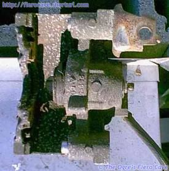
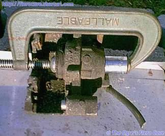
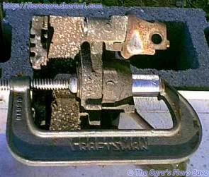
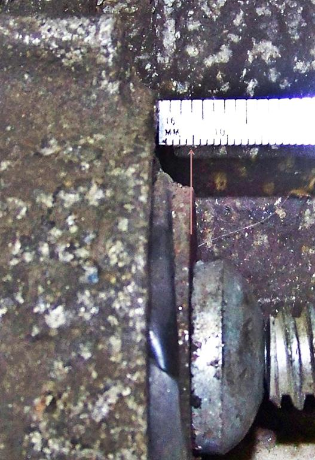
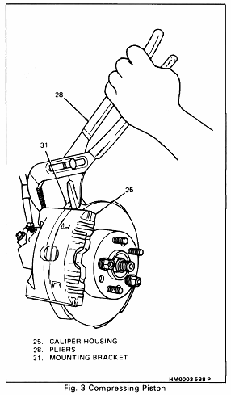

Go Home
Site Map
Go Home
Site Map
Rear Caliper Compression
Here's a driver's side caliper I've had sitting around awhile. Note that it sat on a shelf for a year like this without pushing out the piston. I got it off a junked Fiero for these pictures but didn't get around to shooting them until now. I've already taken the E brake arm off and it is ready to squish.

Here's the caliper ready to squish with the clamp and socket in place. I used a 15/16th socket so it would even clear the rubber around the bolt.

This is the caliper post squish. The clamp take a bit of effort but the piston goes right in. If it doesn't then the E brake screw is seized or the piston is bad.

How to I tell when my piston is retracted enough?
- Is the dust boot, even a part of boot, is flat? Then piston is bottom out.
- Dust boot is totally hosed? Piston to caliper body measures under 5mm, 3/16in, then piston is at bottom.

How easy?
GM uses Pliers to retract the piston. Pliers will work if caliper and sliders are in good condition. Don't believe me?
Remove or Disconnect
1. - 7. Similar to above method.
8. Bottom piston (17) into caliper bore to provide clearance between linings and rotor (Figure 1).
· Position 12 inch adjustable pliers (28) over caliper mounting bracket, (31) and inboard caliper housing (25) (Figure 3).
CAUTION: Do not allow pliers to contact actuator screw.

Source: 87 Service Manual. Image Figure 3, page 5B8-3, goes with text on page 5B8-1.